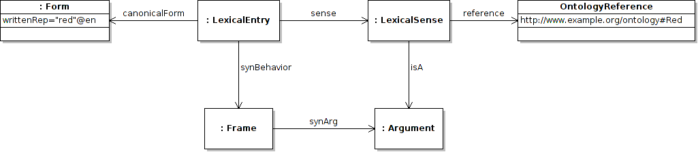
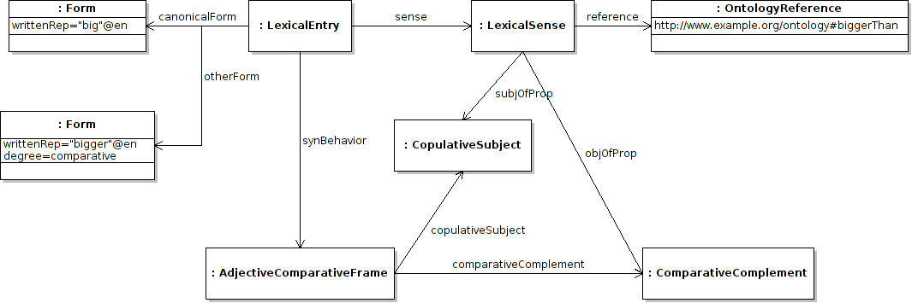

Next: Correspondence Up: Syntax and Mapping Module Previous: Mapping to more complex Contents
Adjectives present particular challenges in mapping and while the lemon vocabulary presented so far is suitable for most mappings, we will present design patterns explaining how mapping with adjectives should be performed. For the most part adjectives are involved in unary syntactic frames (that is a frame with a single argument), except for the case where they have a prepositional complement, e.g., “X is similar to Y” or are used postpositively, e.g., “X ist Y ähnlich” in German. We shall leave these binary cases as an example to the user as they function like other examples presentend above. As such we shall only handle the case where adjectives are unary. Given that we have assumed adjectives are unary then it is clear that on the ontology side they correspond to classes. For example assume Red is a class in our ontology then we can map the lexical entry “red” as follows
:red lemon:canonicalForm [ lemon:writtenRep "red"@en ] ;
lemon:sense [ lemon:reference ontology:Red ;
lemon:isA :attr ] ;
lemon:synBehavior [ lemon:synArg :attr ] .

In fact the inclusion of adjectives as classes in the ontology is rare in general, but lemon cannot semantically map lexical entries to semantics that is not extant in the ontology. As such it is often necessary to the ontology vocabulary, i.e., OWL, to include these semantics to map to a lexicon. For example consider the example of an ontology with a property color with values {green, red, blue}. As the color words are individuals it is not possible to map the syntactic predicates of “red”, “green” and “blue“ to them without first making them into classes. This is simply done as follows
ontology:Green a owl:Class ;
owl:equivalentTo [ a owl:Restriction ;
owl:onProperty ontology:color ;
owl:hasValue ontology:green
] .
DL Syntax:
Then these classes are mappable like the previous example. An even more complex example exists if you wish to map an adjective to a datatype property, for example “big” to a property size. As of OWL2 there exists vocabulary to define classes in terms of data type properties, so we may define a class of big cities, BigCity, as all cities of size greater than 500,000.
ontology:BigCity a owl:Class
owl:equivalentTo [ owl:intersectionOf (
ontology:City
[ a owl:Restriction ;
owl:onProperty ontology:size ;
owl:someValueFrom [ a rdfs:Datatype ;
owl:onDatatype xsd:integer ;
owl:withRestrictions ( [ xsd:minExclusive 500000 ] )
]
] )
] .
DLSyntax:
Another aspect of adjectives is that they are frequently used comparatively or superlatively, that is with “more” and “most.” Again this behavior can only be analyzed if the appropriate semantics exist within the ontology. For example, consider we have “big” and we wish to define “bigger”, this clearly gives a binary frame “X is bigger than Y” and hence must be matched to a property in the ontology as follows, the frame should then be marked in someway as a comparative frame, for example in LexInfo 2 this is done by the AdjectiveComparativeFrame. So we could map as follows.
:big lemon:canonicalForm [ lemon:writtenRep "big"@en ] ;
lemon:otherForm [ lemon:writtenRep "bigger"@en ;
isocat:degree isocat:comparative ] ;
lemon:synBehavior [ a lexinfo:AdjectiveComparativeFrame ;
lexinfo:copulativeSubj :subj ;
lexinfo:comparativeComplement :comp ]
lemon:sense [ lemon:reference ontology:biggerThan ;
lemon:subjOfProp :subj ;
lemon:objOfProp :comp ] .
lexinfo:AdjectiveComparativeFrame rdfs:subClassOf lemon:Frame .
lexinfo:copulativeSubj rdfs:subPropertyOf lemon:synArg .
lexinfo:comparativeComplement rdfs:subPropertyOf lemon:synArg .

This comparative property is not currently representable in OWL, however it is possible to express it in SWRL, for example we could define the biggerThan property in the following way
:y rdf:type swrl:Variable .
:x rdf:type swrl:Variable .
:s1 rdf:type swrl:Variable .
:s2 rdf:type swrl:Variable .
[ rdf:type swrl:Imp ;
swrl:body ( [ rdf:type swrl:ClassAtom ;
swrl:classPredicate :City ;
swrl:argument1 :x
]
[ rdf:type swrl:ClassAtom ;
swrl:classPredicate :City ;
swrl:argument1 :y
]
[ rdf:type swrl:DatavaluedPropertyAtom ;
swrl:argument2 :s1 ;
swrl:propertyPredicate :size ;
swrl:argument1 :x
]
[ rdf:type swrl:DatavaluedPropertyAtom ;
swrl:argument2 :s2 ;
swrl:propertyPredicate :size ;
swrl:argument1 :y
]
[ rdf:type swrl:BuiltinAtom ;
swrl:builtin swrlb:greaterThan ;
swrl:arguments ( :s1
:s2 )
]
) ;
swrl:head ( [ rdf:type swrl:IndividualPropertyAtom ;
swrl:propertyPredicate :biggerThan ;
swrl:argument1 :x ;
swrl:argument2 :y
]
) ] .
SWRL Rule:
City(?x) , City(?y) , size(?x, ?s1) , size(?y, ?s2) , greaterThan(?s1, ?s2) → biggerThan(?x, ?y)
John McCrae 2012-07-31